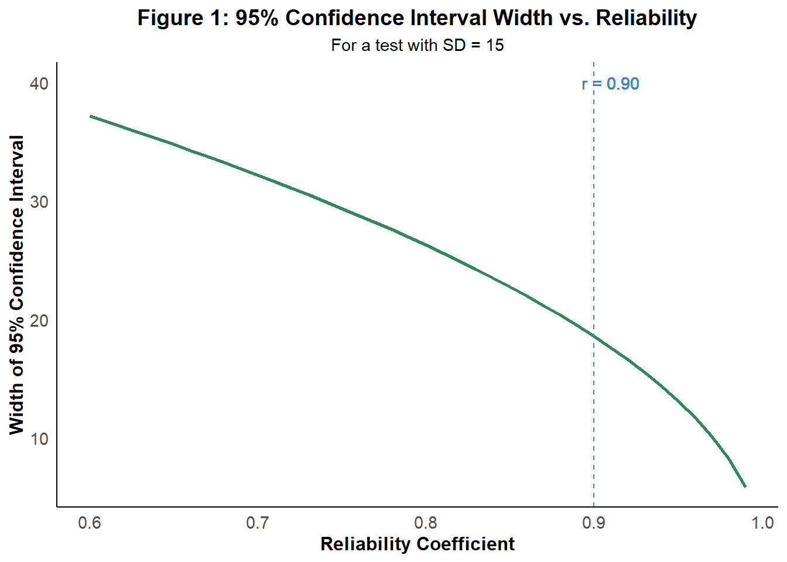
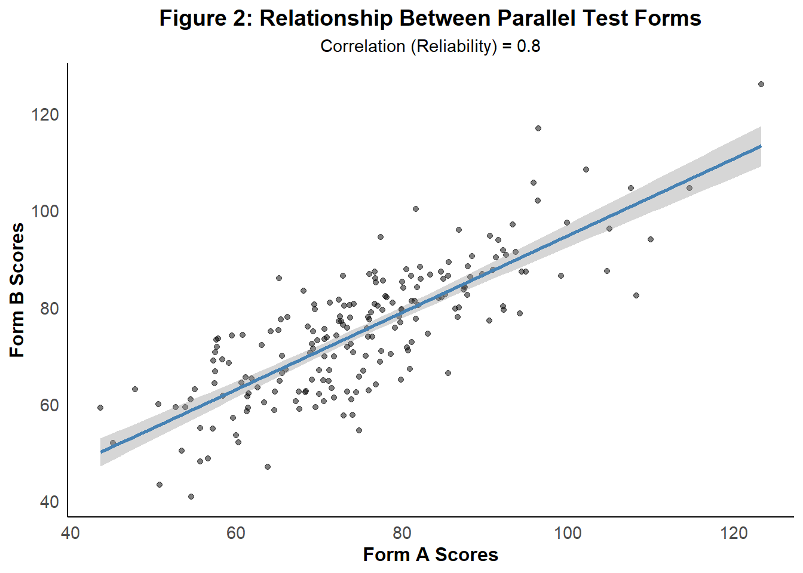
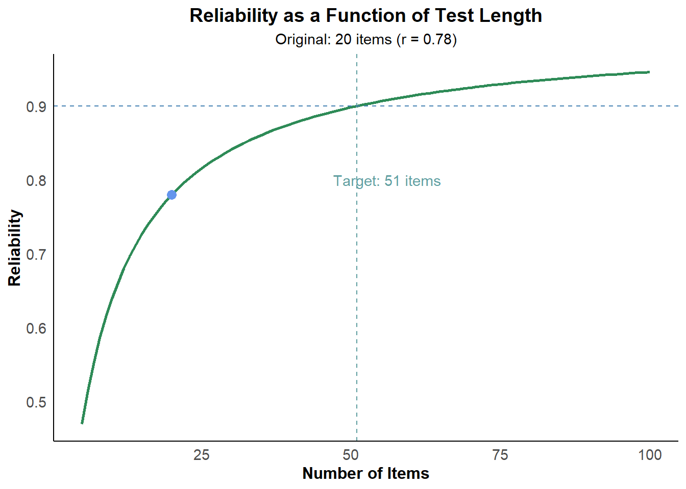
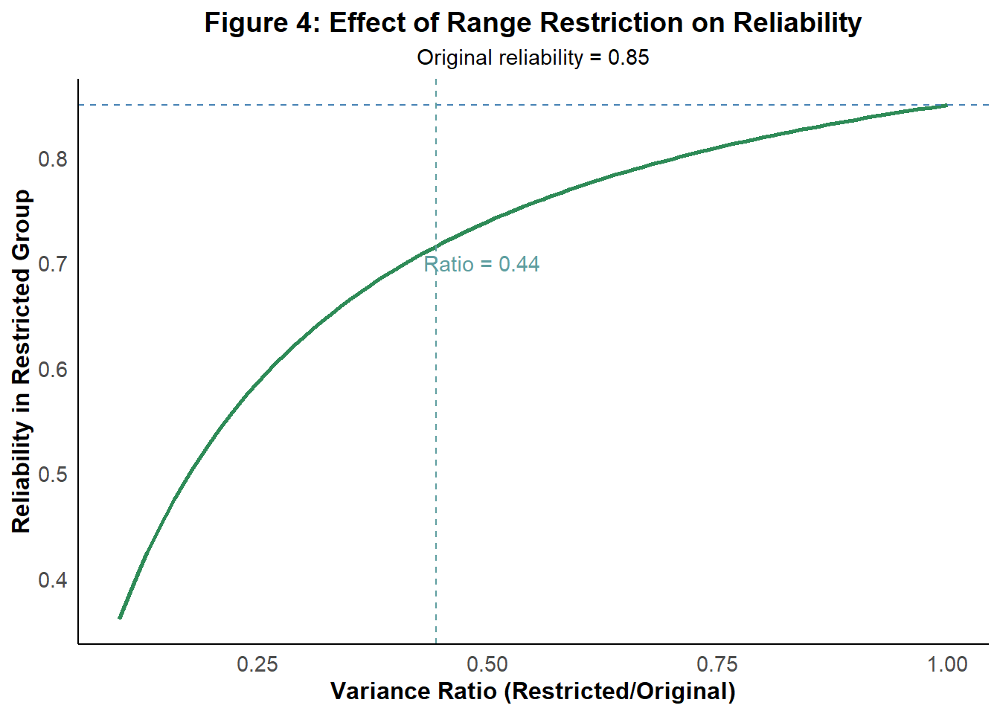
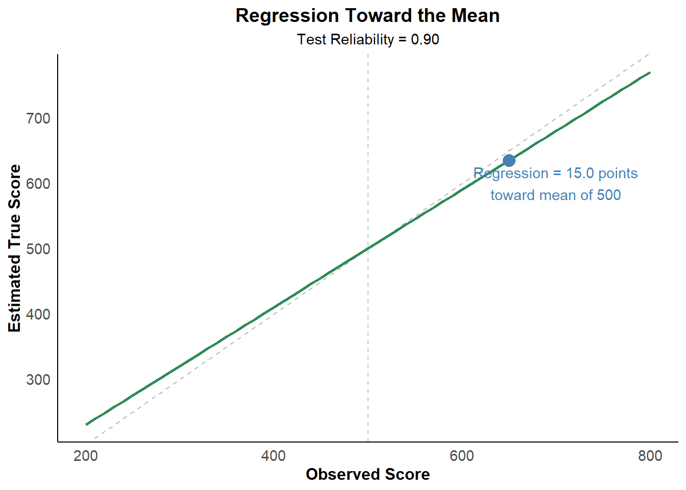
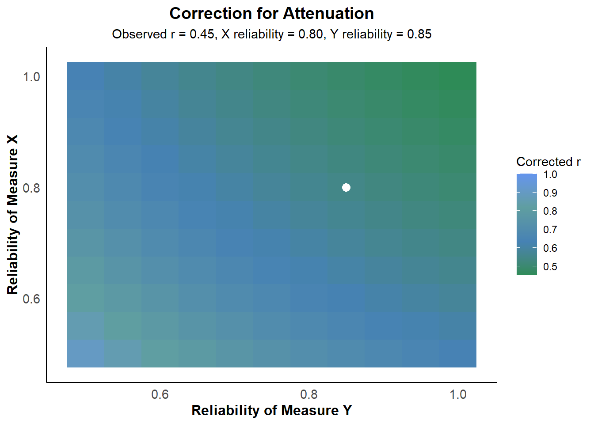
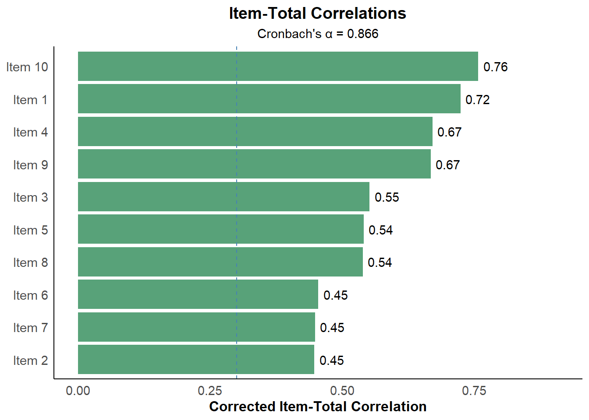

Chapter 2 Reliability in Classical Test Theory
library(psych) library(ggplot2) library(dplyr) library(corrplot)
# Reliability in Classical Test Theory
## Introduction to Reliability
Reliability is a fundamental concept in [Classical Test Theory (CTT)](classical-test-theory.html) that quantifies the consistency and precision of measurements. It answers the critical question: "To what extent can we trust that our test scores represent stable characteristics rather than random fluctuations?"
In psychometric terms, reliability represents the proportion of observed score variance that is attributable to true score variance. A highly reliable test produces scores that are relatively free from random measurement error, providing a more accurate reflection of the underlying construct being measured.
> **Note**: For a comprehensive reference of all mathematical symbols and formulas used in this document, see the [Mathematical Notation Reference Guide](#math-notation).
## Mathematical Foundation of Reliability
### The Reliability Coefficient
The reliability coefficient ($\rho_{XX'}$) is defined as the ratio of true score variance to observed score variance:
$$\rho_{XX'} = \frac{\sigma^2_T}{\sigma^2_X} = \frac{\sigma^2_T}{\sigma^2_T + \sigma^2_E}$$
Where:
- $\sigma^2_T$ is the variance of true scores
- $\sigma^2_X$ is the variance of observed scores
- $\sigma^2_E$ is the variance of error scores
Since true scores cannot be directly observed, reliability must be estimated using various methods, each based on different assumptions about the nature of measurement error.
### Alternate Formulation
Reliability can also be expressed in terms of error variance:
$$\rho_{XX'} = 1 - \frac{\sigma^2_E}{\sigma^2_X}$$
This formulation highlights that as error variance approaches zero, reliability approaches one (perfect reliability).
## Standard Error of Measurement (SEM)
The Standard Error of Measurement quantifies the precision of individual test scores by estimating the standard deviation of errors around a person's true score.
### Mathematical Definition
The SEM is calculated as:
$$\text{SEM} = \sigma_X \sqrt{1 - \rho_{XX'}}$$
Where:
- $\sigma_X$ is the standard deviation of observed scores
- $\rho_{XX'}$ is the reliability coefficient
### Confidence Intervals for True Scores
The SEM allows for the construction of confidence intervals around observed scores to estimate the range within which the true score likely falls:
$$\text{CI}_{95\%} = X_O \pm 1.96 \times \text{SEM}$$
This indicates the range within which we can be 95% confident that the individual's true score falls, assuming errors are normally distributed.
### Example: Calculating SEM and Confidence Intervals
Consider an intelligence test with a standard deviation of 15 points and a reliability of 0.90. For an individual who scores 110:
$$\text{SEM} = 15 \times \sqrt{1 - 0.90} = 15 \times 0.316 = 4.74$$
The 95% confidence interval would be:
$$\text{CI}_{95\%} = 110 \pm 1.96 \times 4.74 = 110 \pm 9.29 = [100.71, 119.29]$$
This means we can be 95% confident that the individual's true IQ score falls between approximately 101 and 119.
### R Code for SEM and Confidence Intervals
``` r
if(!exists("theme_psych_book")) source("theme_psych_book.R")
# Function to calculate SEM and confidence intervals
calculate_sem_ci <- function(observed_score, reliability, sd, conf_level = 0.95) {
# Calculate SEM
sem <- sd * sqrt(1 - reliability)
# Calculate z-value for the specified confidence level
z <- qnorm((1 + conf_level) / 2)
# Calculate confidence interval
ci_lower <- observed_score - z * sem
ci_upper <- observed_score + z * sem
# Return results
return(list(
observed_score = observed_score,
reliability = reliability,
sem = sem,
ci_lower = ci_lower,
ci_upper = ci_upper,
conf_level = conf_level
))
}
# Example: IQ test
result <- calculate_sem_ci(observed_score = 110, reliability = 0.90, sd = 15)
cat("SEM:", round(result$sem, 2), "\n")SEM: 4.74 cat(paste0(result$conf_level * 100, "% Confidence Interval: [",
round(result$ci_lower, 2), ", ", round(result$ci_upper, 2), "]"))95% Confidence Interval: [100.7, 119.3]# Visualize confidence intervals for different reliability values
reliability_values <- seq(0.6, 0.99, by = 0.01)
sem_values <- sapply(reliability_values, function(r) 15 * sqrt(1 - r))
ci_width_values <- 1.96 * sem_values * 2
reliability_df <- data.frame(
Reliability = reliability_values,
SEM = sem_values,
CI_Width = ci_width_values
)
ggplot(reliability_df, aes(x = Reliability, y = CI_Width)) +
geom_line(color = cool_colors[1], size = 1) +
geom_vline(xintercept = 0.90, linetype = "dashed", color = cool_colors[2]) +
geom_text(aes(x = 0.91, y = 40, label = "r = 0.90"), color = cool_colors[2]) +
labs(title = "Figure 1: 95% Confidence Interval Width vs. Reliability",
subtitle = "For a test with SD = 15",
x = "Reliability Coefficient",
y = "Width of 95% Confidence Interval") +
theme_psych_book()
# Explanation of Figure 1
cat("\n**Figure 1 Interpretation:** This graph illustrates the relationship between test reliability and the width of the 95% confidence interval for true scores. As reliability increases (moving right on the x-axis), the confidence interval width decreases (moving down on the y-axis), indicating more precise measurement. The red dashed line at reliability = 0.90 shows that at this level of reliability, which is common for high-quality psychological tests, the 95% confidence interval width is approximately", round(ci_width_values[which(reliability_values == 0.9)], 1), "points for a test with SD = 15 (like an IQ test). This demonstrates why higher reliability is desirable: it results in narrower confidence intervals and thus more precise estimates of true scores.\n")
**Figure 1 Interpretation:** This graph illustrates the relationship between test reliability and the width of the 95% confidence interval for true scores. As reliability increases (moving right on the x-axis), the confidence interval width decreases (moving down on the y-axis), indicating more precise measurement. The red dashed line at reliability = 0.90 shows that at this level of reliability, which is common for high-quality psychological tests, the 95% confidence interval width is approximately points for a test with SD = 15 (like an IQ test). This demonstrates why higher reliability is desirable: it results in narrower confidence intervals and thus more precise estimates of true scores.2.1 Parallel Tests and Their Mathematical Properties
2.1.1 Definition of Parallel Tests
Parallel tests are two or more measurement instruments that meet the following criteria:
- They measure the same construct
- They have equal true score means: \(\mu_{T1} = \mu_{T2}\)
- They have equal true score variances: \(\sigma^2_{T1} = \sigma^2_{T2}\)
- They have equal error variances: \(\sigma^2_{E1} = \sigma^2_{E2}\)
- The correlation between errors on the two tests is zero: \(r_{E1,E2} = 0\)
2.1.2 Mathematical Implications
For parallel tests, several important mathematical relationships hold:
The correlation between parallel tests equals their reliability: \[r_{X1X2} = \rho_{XX'}\]
The covariance between parallel tests equals true score variance: \[\text{Cov}(X_1, X_2) = \sigma^2_T\]
For any two parallel tests, the reliability can be estimated as: \[\rho_{XX'} = \frac{\text{Cov}(X_1, X_2)}{\sigma_{X1} \times \sigma_{X2}} = r_{X1X2}\]
2.1.3 Tau-Equivalent Tests
Tau-equivalent tests are a less restrictive case where tests measure the same construct with equal true scores but may have different error variances. For tau-equivalent tests:
\[X_{i} = T + E_{i}\]
Where the true score (T) is the same across tests, but error variances may differ.
2.1.4 Essentially Tau-Equivalent Tests
Essentially tau-equivalent tests allow for an additive constant between true scores:
\[X_{i} = T + c_i + E_{i}\]
Where \(c_i\) is a constant specific to test \(i\).
2.1.5 Example: Analyzing Parallel Tests
Consider two forms of a vocabulary test administered to 200 students:
| Statistic | Form A | Form B |
|---|---|---|
| Mean | 75.2 | 74.8 |
| Variance | 225 | 216 |
| Correlation between forms | 0.82 |
For truly parallel tests, we would expect: - Nearly equal means (75.2 ≈ 74.8) ✓ - Nearly equal variances (225 ≈ 216) ✓ - The correlation (0.82) represents the reliability of either form
2.1.6 R Code for Parallel Test Analysis
if(!exists("theme_psych_book")) source("theme_psych_book.R")
# Function to assess parallelism and estimate reliability
analyze_parallel_tests <- function(scores_a, scores_b) {
# Basic statistics
mean_a <- mean(scores_a)
mean_b <- mean(scores_b)
var_a <- var(scores_a)
var_b <- var(scores_b)
correlation <- cor(scores_a, scores_b)
# Test for equal means
t_test_result <- t.test(scores_a, scores_b, paired = TRUE)
# Test for equal variances
var_test_result <- var.test(scores_a, scores_b)
# Estimate reliability
reliability_estimate <- correlation
# True score variance estimate
true_score_var <- cov(scores_a, scores_b)
# Error variance estimates
error_var_a <- var_a - true_score_var
error_var_b <- var_b - true_score_var
return(list(
mean_a = mean_a,
mean_b = mean_b,
var_a = var_a,
var_b = var_b,
correlation = correlation,
mean_equal = t_test_result$p.value > 0.05,
var_equal = var_test_result$p.value > 0.05,
reliability = reliability_estimate,
true_score_var = true_score_var,
error_var_a = error_var_a,
error_var_b = error_var_b
))
}
# Simulate data for parallel tests
set.seed(123)
true_scores <- rnorm(200, mean = 75, sd = 13)
error_a <- rnorm(200, mean = 0, sd = 6)
error_b <- rnorm(200, mean = 0, sd = 6)
scores_a <- true_scores + error_a
scores_b <- true_scores + error_b
# Analyze parallelism
result <- analyze_parallel_tests(scores_a, scores_b)
print(paste("Means equal:", result$mean_equal))[1] "Means equal: TRUE"[1] "Variances equal: TRUE"[1] "Reliability estimate: 0.8"[1] "True score variance: 144.38"[1] "Error variance A: 37.6"[1] "Error variance B: 35.17"# Visualize the relationship between parallel tests
test_data <- data.frame(Form_A = scores_a, Form_B = scores_b)
ggplot(test_data, aes(x = Form_A, y = Form_B)) +
geom_point(alpha = 0.5) +
geom_smooth(method = "lm", color = cool_colors[2]) +
labs(title = "Figure 2: Relationship Between Parallel Test Forms",
subtitle = paste("Correlation (Reliability) =", round(result$reliability, 2)),
x = "Form A Scores",
y = "Form B Scores") +
theme_psych_book()
# Explanation of Figure 2
cat("\n**Figure 2 Interpretation:** This scatterplot illustrates the relationship between scores from two parallel test forms (Form A and Form B). Each point represents one individual who took both forms. The correlation between these forms (", round(result$reliability, 2), ") is an estimate of the reliability of either form. The red line shows the linear relationship between the scores. The closer the points cluster around this line, the higher the reliability. In parallel tests, we expect individuals to obtain similar scores on both forms, with any differences attributable to measurement error. The correlation observed here indicates a good level of reliability, suggesting consistency in measurement across the two forms.\n")
**Figure 2 Interpretation:** This scatterplot illustrates the relationship between scores from two parallel test forms (Form A and Form B). Each point represents one individual who took both forms. The correlation between these forms ( 0.8 ) is an estimate of the reliability of either form. The red line shows the linear relationship between the scores. The closer the points cluster around this line, the higher the reliability. In parallel tests, we expect individuals to obtain similar scores on both forms, with any differences attributable to measurement error. The correlation observed here indicates a good level of reliability, suggesting consistency in measurement across the two forms.2.2 Reliability and Test Length
2.2.1 The Spearman-Brown Prophecy Formula
The Spearman-Brown prophecy formula predicts how reliability changes when test length is modified:
\[\rho_{XX'(n)} = \frac{n \times \rho_{XX'(1)}}{1 + (n-1) \times \rho_{XX'(1)}}\]
Where: - \(\rho_{XX'(n)}\) is the reliability of the test after length modification - \(\rho_{XX'(1)}\) is the reliability of the original test - \(n\) is the factor by which test length is changed
2.2.2 Special Cases
For doubling test length (\(n = 2\)):
\[\rho_{XX'(2)} = \frac{2 \times \rho_{XX'(1)}}{1 + \rho_{XX'(1)}}\]
For halving test length (\(n = 0.5\)):
\[\rho_{XX'(0.5)} = \frac{0.5 \times \rho_{XX'(1)}}{1 + (0.5-1) \times \rho_{XX'(1)}} = \frac{\rho_{XX'(1)}}{2 - \rho_{XX'(1)}}\]
2.2.3 Example: Effect of Test Length on Reliability
A 20-item personality scale has a reliability of 0.78. What would be the reliability if: - The test length is doubled to 40 items? - The test length is reduced to 10 items?
Using the Spearman-Brown formula:
For doubling: \[\rho_{XX'(2)} = \frac{2 \times 0.78}{1 + 0.78} = \frac{1.56}{1.78} = 0.876\]
For halving: \[\rho_{XX'(0.5)} = \frac{0.5 \times 0.78}{1 + (0.5-1) \times 0.78} = \frac{0.39}{1 - 0.39} = \frac{0.39}{0.61} = 0.639\]
2.2.4 R Code for Test Length Analysis
if(!exists("theme_psych_book")) source("theme_psych_book.R")
# Function to apply Spearman-Brown formula
spearman_brown <- function(reliability, length_factor) {
new_reliability <- (length_factor * reliability) / (1 + (length_factor - 1) * reliability)
return(new_reliability)
}
# Function to find required test length for target reliability
required_length <- function(current_reliability, target_reliability) {
n <- (target_reliability * (1 - current_reliability)) / (current_reliability * (1 - target_reliability))
return(n)
}
# Example: 20-item scale with reliability 0.78
original_reliability <- 0.78
original_length <- 20
# Double the length
double_reliability <- spearman_brown(original_reliability, 2)
cat("Reliability if doubled to 40 items:", round(double_reliability, 3), "\n")Reliability if doubled to 40 items: 0.876 # Half the length
half_reliability <- spearman_brown(original_reliability, 0.5)
cat("Reliability if reduced to 10 items:", round(half_reliability, 3), "\n")Reliability if reduced to 10 items: 0.639 # How many items needed for reliability of 0.90?
factor_needed <- required_length(original_reliability, 0.90)
items_needed <- ceiling(original_length * factor_needed)
cat("Items needed for reliability of 0.90:", items_needed, "\n")Items needed for reliability of 0.90: 51 # Plot reliability as a function of test length
length_factors <- seq(0.25, 5, by = 0.05)
reliabilities <- sapply(length_factors, function(n) spearman_brown(original_reliability, n))
item_counts <- original_length * length_factors
reliability_length_df <- data.frame(
Items = item_counts,
Reliability = reliabilities
)
ggplot(reliability_length_df, aes(x = Items, y = Reliability)) +
geom_line(color = cool_colors[1], size = 1) +
geom_vline(xintercept = items_needed, linetype = "dashed", color = cool_colors[3]) +
geom_hline(yintercept = 0.9, linetype = "dashed", color = cool_colors[2]) +
geom_point(data = data.frame(x = original_length, y = original_reliability),
aes(x = x, y = y), color = cool_colors[4], size = 3) +
annotate("text", x = items_needed + 5, y = 0.8,
label = sprintf("Target: %d items", items_needed),
color = cool_colors[3]) +
labs(title = "Reliability as a Function of Test Length",
subtitle = sprintf("Original: %d items (r = %.2f)", original_length, original_reliability),
x = "Number of Items",
y = "Reliability") +
theme_psych_book()
# Explanation of Figure 3
cat("\n**Figure 3 Interpretation:** This graph demonstrates how test reliability changes as test length increases or decreases, according to the Spearman-Brown prophecy formula. Starting with an original test of 20 items with reliability of 0.78 (represented by the blue line), we can see that reliability increases with test length, but with diminishing returns. The red horizontal line shows a target reliability of 0.90, which is often considered desirable for tests used in individual assessment. The green vertical line indicates that approximately", items_needed, "items would be needed to achieve this target reliability. This visualization illustrates an important principle in test development: while adding items improves reliability, there comes a point where adding more items yields minimal gains, requiring consideration of practical constraints like testing time and respondent fatigue.\n")
**Figure 3 Interpretation:** This graph demonstrates how test reliability changes as test length increases or decreases, according to the Spearman-Brown prophecy formula. Starting with an original test of 20 items with reliability of 0.78 (represented by the blue line), we can see that reliability increases with test length, but with diminishing returns. The red horizontal line shows a target reliability of 0.90, which is often considered desirable for tests used in individual assessment. The green vertical line indicates that approximately 51 items would be needed to achieve this target reliability. This visualization illustrates an important principle in test development: while adding items improves reliability, there comes a point where adding more items yields minimal gains, requiring consideration of practical constraints like testing time and respondent fatigue.2.3 Reliability and Group Homogeneity
2.3.1 The Effect of Range Restriction
Reliability coefficients are not invariant across populations with different variance characteristics. In general, more heterogeneous groups (groups with greater true score variance) yield higher reliability coefficients than more homogeneous groups, even when the test’s measurement precision is identical.
The mathematical relationship is:
\[\rho_{XX'(2)} = \frac{\sigma^2_{T(2)}}{\sigma^2_{T(2)} + \sigma^2_E} = \frac{\sigma^2_{T(2)}}{\sigma^2_{T(2)} + \sigma^2_E}\]
Where: - \(\rho_{XX'(2)}\) is the reliability in population 2 - \(\sigma^2_{T(2)}\) is the true score variance in population 2 - \(\sigma^2_E\) is the error variance (assumed constant across populations)
2.3.2 Adjusting Reliability for Range Restriction
When a test is developed on a heterogeneous population but applied to a more homogeneous subgroup, reliability will typically decrease. The formula for this adjustment is:
\[\rho_{XX'(2)} = \frac{\rho_{XX'(1)} \times \sigma^2_{X(2)}}{\sigma^2_{X(1)} - \rho_{XX'(1)} \times (\sigma^2_{X(1)} - \sigma^2_{X(2)})}\]
Where: - \(\rho_{XX'(1)}\) is the reliability in the original population - \(\rho_{XX'(2)}\) is the reliability in the restricted population - \(\sigma^2_{X(1)}\) is the observed score variance in the original population - \(\sigma^2_{X(2)}\) is the observed score variance in the restricted population
2.3.3 Example: Effect of Range Restriction
A cognitive ability test has a reliability of 0.85 in the general population, where scores have a variance of 225. When used only with college students, the score variance decreases to 100. The adjusted reliability would be:
\[\rho_{XX'(2)} = \frac{0.85 \times 100}{225 - 0.85 \times (225 - 100)} = \frac{85}{225 - 0.85 \times 125} = \frac{85}{225 - 106.25} = \frac{85}{118.75} = 0.716\]
2.3.4 R Code for Range Restriction Analysis
if(!exists("theme_psych_book")) source("theme_psych_book.R")
# Function to adjust reliability for range restriction
adjust_reliability_for_range <- function(rel_original, var_original, var_restricted) {
rel_restricted <- (rel_original * var_restricted) /
(var_original - rel_original * (var_original - var_restricted))
return(rel_restricted)
}
# Example: Cognitive ability test
rel_original <- 0.85
var_original <- 225
var_restricted <- 100
rel_restricted <- adjust_reliability_for_range(rel_original, var_original, var_restricted)
cat("Original reliability:", rel_original, "\n")Original reliability: 0.85 Variance ratio (restricted/original): 0.4444444 Restricted reliability: 0.716 # Plot relationship between variance ratio and reliability
variance_ratios <- seq(0.1, 1, by = 0.01)
restricted_reliabilities <- sapply(variance_ratios, function(ratio) {
adjust_reliability_for_range(rel_original, var_original, var_original * ratio)
})
range_restriction_df <- data.frame(
Variance_Ratio = variance_ratios,
Reliability = restricted_reliabilities
)
ggplot(range_restriction_df, aes(x = Variance_Ratio, y = Reliability)) +
geom_line(color = cool_colors[1], size = 1) +
geom_hline(yintercept = rel_original, linetype = "dashed", color = cool_colors[2]) +
geom_vline(xintercept = var_restricted/var_original, linetype = "dashed", color = cool_colors[3]) +
annotate("text", x = var_restricted/var_original + 0.05, y = 0.7,
label = paste("Ratio =", round(var_restricted/var_original, 2)), color = cool_colors[3]) +
labs(title = "Figure 4: Effect of Range Restriction on Reliability",
subtitle = paste("Original reliability =", rel_original),
x = "Variance Ratio (Restricted/Original)",
y = "Reliability in Restricted Group") +
theme_psych_book()
# Explanation of Figure 4
cat("\n**Figure 4 Interpretation:** This graph illustrates how reliability changes when a test is used with a more homogeneous population (range restriction). The x-axis shows the variance ratio between the restricted and original populations, with smaller values indicating greater range restriction. The y-axis shows the resulting reliability in the restricted population. The red horizontal line represents the original reliability (0.85) in the heterogeneous population. The green vertical line shows our example where the variance ratio is 0.44, resulting in a reduced reliability of approximately 0.72. This demonstrates an important principle: when a test developed for a general population is used with a more homogeneous group (such as college students), reliability typically decreases. This occurs because there is less true score variance to detect in a more similar group, even though the test's measurement precision remains the same.\n")
**Figure 4 Interpretation:** This graph illustrates how reliability changes when a test is used with a more homogeneous population (range restriction). The x-axis shows the variance ratio between the restricted and original populations, with smaller values indicating greater range restriction. The y-axis shows the resulting reliability in the restricted population. The red horizontal line represents the original reliability (0.85) in the heterogeneous population. The green vertical line shows our example where the variance ratio is 0.44, resulting in a reduced reliability of approximately 0.72. This demonstrates an important principle: when a test developed for a general population is used with a more homogeneous group (such as college students), reliability typically decreases. This occurs because there is less true score variance to detect in a more similar group, even though the test's measurement precision remains the same.2.4 Estimation of True Scores
2.4.1 Regression Toward the Mean
Due to measurement error, observed scores tend to be less extreme than true scores. The best estimate of a person’s true score is given by the regression formula:
\[\hat{T} = \mu_X + \rho_{XX'} \times (X_O - \mu_X)\]
Where: - \(\hat{T}\) is the estimated true score - \(\mu_X\) is the mean of the observed scores in the population - \(\rho_{XX'}\) is the reliability coefficient - \(X_O\) is the individual’s observed score
This formula shows that estimated true scores are “regressed” toward the mean, with the extent of regression determined by reliability.
2.4.2 Confidence Intervals for Estimated True Scores
Confidence intervals for estimated true scores can be calculated as:
\[\text{CI}_{95\%} = \hat{T} \pm 1.96 \times \text{SEM}_{\hat{T}}\]
Where \(\text{SEM}_{\hat{T}}\) is the standard error of estimate for the predicted true score:
\[\text{SEM}_{\hat{T}} = \sigma_X \times \sqrt{\rho_{XX'} \times (1 - \rho_{XX'})}\]
2.4.3 Example: Estimating True Scores
A student takes a standardized test with a mean of 500, standard deviation of 100, and reliability of 0.90. The student obtains a score of 650.
The estimated true score would be: \[\hat{T} = 500 + 0.90 \times (650 - 500) = 500 + 0.90 \times 150 = 500 + 135 = 635\]
The standard error of estimate would be: \[\text{SEM}_{\hat{T}} = 100 \times \sqrt{0.90 \times (1 - 0.90)} = 100 \times \sqrt{0.09} = 30\]
The 95% confidence interval would be: \[\text{CI}_{95\%} = 635 \pm 1.96 \times 30 = 635 \pm 58.8 = [576.2, 693.8]\]
2.4.4 R Code for True Score Estimation
if(!exists("theme_psych_book")) source("theme_psych_book.R")
# Function to estimate true scores and confidence intervals
estimate_true_score <- function(observed_score, mean_x, sd_x, reliability, conf_level = 0.95) {
# Estimate true score
estimated_true_score <- mean_x + reliability * (observed_score - mean_x)
# Calculate standard error of estimate
sem_est <- sd_x * sqrt(reliability * (1 - reliability))
# Calculate z-value for the specified confidence level
z <- qnorm((1 + conf_level) / 2)
# Calculate confidence interval
ci_lower <- estimated_true_score - z * sem_est
ci_upper <- estimated_true_score + z * sem_est
# Calculate regression toward the mean
regression_amount <- (1 - reliability) * (observed_score - mean_x)
return(list(
observed_score = observed_score,
estimated_true_score = estimated_true_score,
sem_est = sem_est,
ci_lower = ci_lower,
ci_upper = ci_upper,
regression_amount = regression_amount,
conf_level = conf_level
))
}
# Example: Standardized test
mean_x <- 500
sd_x <- 100
reliability <- 0.90
observed_score <- 650
result <- estimate_true_score(observed_score, mean_x, sd_x, reliability)
cat("Observed Score:", result$observed_score, "\n")Observed Score: 650 Estimated True Score: 635 Regression toward the mean: 15 Standard Error of Estimate: 30 cat(paste0(result$conf_level * 100, "% Confidence Interval: [",
round(result$ci_lower, 2), ", ", round(result$ci_upper, 2), "]"))95% Confidence Interval: [576.2, 693.8]# Visualize regression toward the mean
observed_scores <- seq(200, 800, by = 10)
estimated_true_scores <- sapply(observed_scores, function(score) {
mean_x + reliability * (score - mean_x)
})
regression_df <- data.frame(
Observed = observed_scores,
Estimated_True = estimated_true_scores
)
ggplot(regression_df, aes(x = Observed, y = Estimated_True)) +
# Reference line for perfect reliability
geom_abline(slope = 1, intercept = 0, linetype = "dashed", color = "gray50", alpha = 0.5) +
# Main regression line
geom_line(color = cool_colors[1], size = 1) +
# Point and regression visualization
geom_segment(aes(x = observed_score, xend = observed_score,
y = observed_score, yend = result$estimated_true_score),
color = cool_colors[2], linetype = "dotted") +
geom_point(aes(x = observed_score, y = result$estimated_true_score),
color = cool_colors[2], size = 4) +
# Add mean reference
geom_vline(xintercept = mean_x, linetype = "dashed", color = cool_colors[3], alpha = 0.5) +
# Annotations
annotate("text", x = 700, y = 600,
label = sprintf("Regression = %.1f points\ntoward mean of %d",
result$regression_amount, mean_x),
color = cool_colors[2]) +
labs(title = "Regression Toward the Mean",
subtitle = sprintf("Test Reliability = %.2f", reliability),
x = "Observed Score",
y = "Estimated True Score") +
theme_psych_book()
# Explanation of Figure 5
cat("\n**Figure 5 Interpretation:** This graph demonstrates regression toward the mean, a statistical phenomenon that occurs when estimating true scores from observed scores. The gray dashed line represents what we would observe if true scores were identical to observed scores (which would require perfect reliability). The blue line shows the actual relationship between observed scores and estimated true scores with a reliability of 0.90. The slope of this line is equal to the reliability coefficient, indicating that the estimated true scores are \"regressed\" toward the mean compared to the observed scores. The red point and dotted line illustrate our example of an individual with an observed score of 650, whose estimated true score is 635 - a regression of 15 points toward the mean (500). This regression is greater for more extreme scores and for tests with lower reliability. This visualization helps explain why exceptionally high or low scores tend to be less extreme upon retesting, which is not due to practice effects or measurement issues, but rather a statistical consequence of imperfect reliability.\n")
**Figure 5 Interpretation:** This graph demonstrates regression toward the mean, a statistical phenomenon that occurs when estimating true scores from observed scores. The gray dashed line represents what we would observe if true scores were identical to observed scores (which would require perfect reliability). The blue line shows the actual relationship between observed scores and estimated true scores with a reliability of 0.90. The slope of this line is equal to the reliability coefficient, indicating that the estimated true scores are "regressed" toward the mean compared to the observed scores. The red point and dotted line illustrate our example of an individual with an observed score of 650, whose estimated true score is 635 - a regression of 15 points toward the mean (500). This regression is greater for more extreme scores and for tests with lower reliability. This visualization helps explain why exceptionally high or low scores tend to be less extreme upon retesting, which is not due to practice effects or measurement issues, but rather a statistical consequence of imperfect reliability.2.5 Correction for Attenuation
2.5.1 The Attenuation Problem
When the correlation between two variables is calculated using measures that contain measurement error, the observed correlation is typically lower than the “true” correlation between the constructs. This phenomenon is known as attenuation.
2.5.2 The Correction Formula
The correction for attenuation formula adjusts the observed correlation to estimate what the correlation would be if both measures were perfectly reliable:
\[r_{xy(corrected)} = \frac{r_{xy(observed)}}{\sqrt{r_{xx'} \times r_{yy'}}}\]
Where: - \(r_{xy(corrected)}\) is the corrected correlation - \(r_{xy(observed)}\) is the observed correlation - \(r_{xx'}\) is the reliability of measure X - \(r_{yy'}\) is the reliability of measure Y
2.5.3 Example: Correcting a Correlation
A researcher observes a correlation of 0.45 between a test of spatial ability and mathematical performance. The reliability of the spatial ability test is 0.80, and the reliability of the math test is 0.85.
The corrected correlation would be:
\[r_{xy(corrected)} = \frac{0.45}{\sqrt{0.80 \times 0.85}} = \frac{0.45}{\sqrt{0.68}} = \frac{0.45}{0.825} = 0.55\]
This suggests that the “true” correlation between the constructs is around 0.55, rather than the observed 0.45.
2.5.4 R Code for Attenuation Correction
if(!exists("theme_psych_book")) source("theme_psych_book.R")
# Function to correct correlation for attenuation
correct_for_attenuation <- function(observed_r, reliability_x, reliability_y) {
corrected_r <- observed_r / sqrt(reliability_x * reliability_y)
return(corrected_r)
}
# Example: Spatial ability and math performance
observed_r <- 0.45
reliability_x <- 0.80
reliability_y <- 0.85
corrected_r <- correct_for_attenuation(observed_r, reliability_x, reliability_y)
cat("Observed correlation:", observed_r, "\n")Observed correlation: 0.45 Reliability of measure X: 0.8 Reliability of measure Y: 0.85 Corrected correlation: 0.546 # Create a visualization of how different reliability combinations affect correction
rel_x <- seq(0.5, 1, by = 0.05)
rel_y <- seq(0.5, 1, by = 0.05)
corrected_matrix <- matrix(NA, nrow = length(rel_x), ncol = length(rel_y))
for (i in seq_along(rel_x)) {
for (j in seq_along(rel_y)) {
corrected_matrix[i, j] <- correct_for_attenuation(observed_r, rel_x[i], rel_y[j])
}
}
# Convert to data frame for ggplot
correction_df <- expand.grid(
Reliability_X = rel_x,
Reliability_Y = rel_y
)
correction_df$Corrected_r <- as.vector(corrected_matrix)
# Create a heatmap
ggplot(correction_df, aes(x = Reliability_Y, y = Reliability_X, fill = Corrected_r)) +
geom_tile() +
scale_fill_gradientn(colors = c(cool_colors[1], cool_colors[2], cool_colors[3], cool_colors[4]),
limits = c(0.45, 1)) +
geom_point(aes(x = reliability_y, y = reliability_x), color = "white", size = 3) +
labs(title = "Correction for Attenuation",
subtitle = sprintf("Observed r = %.2f, X reliability = %.2f, Y reliability = %.2f",
observed_r, reliability_x, reliability_y),
x = "Reliability of Measure Y",
y = "Reliability of Measure X",
fill = "Corrected r") +
theme_psych_book()
# Explanation of Figure 6
cat("\n**Figure 6 Interpretation:** This heatmap illustrates how the correction for attenuation formula adjusts correlations based on the reliability of the measures involved. The observed correlation (0.45) between two variables is shown by the red point, where the reliability of measure X is 0.80 and the reliability of measure Y is 0.85. The color gradient represents the corrected correlation values that would result from different combinations of reliability values. Darker colors indicate higher corrected correlations. This visualization demonstrates an important principle: the lower the reliability of either measure, the more the observed correlation underestimates the \"true\" relationship between the constructs. In our example, the corrected correlation of approximately 0.55 provides a better estimate of the relationship between the underlying constructs by accounting for the attenuation effect of measurement error. This correction is particularly important when comparing relationships across studies that use measures with different reliability coefficients.\n")
**Figure 6 Interpretation:** This heatmap illustrates how the correction for attenuation formula adjusts correlations based on the reliability of the measures involved. The observed correlation (0.45) between two variables is shown by the red point, where the reliability of measure X is 0.80 and the reliability of measure Y is 0.85. The color gradient represents the corrected correlation values that would result from different combinations of reliability values. Darker colors indicate higher corrected correlations. This visualization demonstrates an important principle: the lower the reliability of either measure, the more the observed correlation underestimates the "true" relationship between the constructs. In our example, the corrected correlation of approximately 0.55 provides a better estimate of the relationship between the underlying constructs by accounting for the attenuation effect of measurement error. This correction is particularly important when comparing relationships across studies that use measures with different reliability coefficients.2.6 Methods for Estimating Reliability
2.6.1 Test-Retest Reliability
Assesses stability over time by correlating scores from two administrations of the same test:
\[r_{tt'} = \frac{\text{Cov}(X_t, X_{t'})}{\sigma_{X_t}\sigma_{X_{t'}}}\]
2.6.2 Internal Consistency Reliability
2.6.2.1 Split-Half Reliability
Divides the test into two halves and correlates scores, then applies the Spearman-Brown formula:
\[r_{XX'} = \frac{2r_{12}}{1 + r_{12}}\]
Where \(r_{12}\) is the correlation between the two halves.
2.6.2.2 Cronbach’s Alpha
Estimates reliability based on inter-item correlations:
\[\alpha = \frac{k}{k-1}\left(1 - \frac{\sum_{i=1}^{k}\sigma_i^2}{\sigma_X^2}\right)\]
Where: - \(k\) is the number of items - \(\sigma_i^2\) is the variance of item \(i\) - \(\sigma_X^2\) is the variance of the total test score
2.6.3 R Code for Reliability Estimation
if(!exists("theme_psych_book")) source("theme_psych_book.R")
# Generate item-level data for a 10-item scale
set.seed(123)
n_subjects <- 200
n_items <- 10
# Generate data with a single underlying factor
true_scores <- rnorm(n_subjects, mean = 0, sd = 1)
item_data <- matrix(NA, nrow = n_subjects, ncol = n_items)
for (i in 1:n_items) {
# Item loading between 0.4 and 0.8
loading <- runif(1, 0.4, 0.8)
# Item error term
error <- rnorm(n_subjects, mean = 0, sd = sqrt(1 - loading^2))
# Generate item scores
item_data[, i] <- loading * true_scores + error
}
item_data <- as.data.frame(item_data)
names(item_data) <- paste0("item", 1:n_items)
# Calculate Cronbach's alpha
alpha_result <- psych::alpha(item_data)
cat("Cronbach's alpha:", round(alpha_result$total$raw_alpha, 3), "\n")Cronbach's alpha: 0.866 # Calculate split-half reliability
splits <- psych::splitHalf(item_data)
cat("Split-half reliability:", round(splits$meanr, 3), "\n")Split-half reliability: 0.866 # Calculate McDonald's omega
omega_result <- psych::omega(item_data, nfactors = 1)
cat("McDonald's omega:", round(omega_result$omega.tot, 3), "\n")McDonald's omega: 0.87 # Visualize item-total correlations
item_total_cors <- alpha_result$item.stats$r.drop
item_total_df <- data.frame(
Item = paste0("Item ", 1:n_items),
Correlation = item_total_cors
)
item_total_df$Item <- factor(item_total_df$Item, levels = item_total_df$Item[order(item_total_df$Correlation)])
ggplot(item_total_df, aes(x = Item, y = Correlation)) +
geom_bar(stat = "identity", fill = cool_colors[1], alpha = 0.8) +
geom_hline(yintercept = 0.3, linetype = "dashed", color = cool_colors[2]) +
geom_text(aes(label = sprintf("%.2f", Correlation)), hjust = -0.2) +
coord_flip() +
labs(title = "Item-Total Correlations",
subtitle = sprintf("Cronbach's α = %.3f", alpha_result$total$raw_alpha),
x = NULL,
y = "Corrected Item-Total Correlation") +
ylim(0, max(item_total_cors) * 1.2) +
theme_psych_book()
# Explanation of Figure 7
cat("\n**Figure 7 Interpretation:** This bar chart displays the corrected item-total correlations for each item in a 10-item scale. Item-total correlation measures how well each item correlates with the total score (excluding that item), indicating how consistently the item measures the same construct as the rest of the scale. The red dashed line at 0.3 represents a commonly used threshold for acceptable item-total correlations in scale development. Items with correlations below this threshold might be candidates for revision or removal. The overall Cronbach's alpha for this scale is", round(alpha_result$total$raw_alpha, 3), ", indicating good internal consistency reliability. This type of analysis is essential during scale development and refinement, as it helps identify items that may not be contributing effectively to the measurement of the intended construct, allowing researchers to improve the scale's reliability by focusing revision efforts on the weakest items.\n")
**Figure 7 Interpretation:** This bar chart displays the corrected item-total correlations for each item in a 10-item scale. Item-total correlation measures how well each item correlates with the total score (excluding that item), indicating how consistently the item measures the same construct as the rest of the scale. The red dashed line at 0.3 represents a commonly used threshold for acceptable item-total correlations in scale development. Items with correlations below this threshold might be candidates for revision or removal. The overall Cronbach's alpha for this scale is 0.866 , indicating good internal consistency reliability. This type of analysis is essential during scale development and refinement, as it helps identify items that may not be contributing effectively to the measurement of the intended construct, allowing researchers to improve the scale's reliability by focusing revision efforts on the weakest items.2.7 Practical Applications and Recommendations
2.7.1 Minimum Reliability Standards
| Purpose | Recommended Minimum Reliability |
|---|---|
| Basic Research | 0.70 - 0.80 |
| Applied Research | 0.80 - 0.90 |
| Individual Decision-Making | 0.90 - 0.95 |
| High-Stakes Testing | > 0.95 |
2.7.2 Strategies for Improving Reliability
- Increase Test Length: Add more items that measure the same construct
- Improve Item Quality: Develop items with higher discrimination
- Standardize Administration: Reduce situational sources of error
- Refine Scoring Procedures: Increase objectivity in scoring
- Use Multiple Measures: Combine different assessment methods
2.7.3 Reporting Practices
When reporting reliability in research: 1. Report the specific reliability coefficient used 2. Provide confidence intervals when possible 3. Report reliability for the current sample, not just from test manuals 4. Consider multiple reliability estimates for a more comprehensive evaluation
2.8 References
- Lord, F. M., & Novick, M. R. (1968). Statistical theories of mental test scores. Reading, MA: Addison-Wesley.
- Cronbach, L. J. (1951). Coefficient alpha and the internal structure of tests. Psychometrika, 16(3), 297-334.
- McDonald, R. P. (1999). Test theory: A unified treatment. Mahwah, NJ: Lawrence Erlbaum Associates.
- Spearman, C. (1910). Correlation calculated from faulty data. British Journal of Psychology, 3(3), 271-295.
- Kelley, T. L. (1947). Fundamentals of statistics. Cambridge, MA: Harvard University Press.
- Revelle, W., & Zinbarg, R. E. (2009). Coefficients alpha, beta, omega, and the glb: Comments on Sijtsma. Psychometrika, 74(1), 145-154.